Cheats
Cheat codes for video games.
Navigate
Game Boy/Game Boy Color
 Ms. Pac-Man/Ms. Pac-Man - Special Color Edition 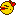
Ms. Pac-Man/Ms. Pac-Man - Special Color Edition 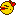
Game Genie
008-1A2-E6E - Rack cheat (advance to next level instantly)
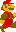 Super Mario Bros. Deluxe 
Game Genie
001-813 - Infinite time
001-C13 + 011-D83 - God mode
00E-112 + 00E-212 + 00E-312 + 00E-412 - No music
631-F23 - 99 coins (every coin gives a 1-up)
FE1-D53 - Invincible
FF1-DB3 + 021-DC3 - Invincible (alternate)
 Super Mario Land 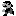
Super Mario Land 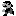
Game Genie
00A-002 - Infinite time (disable on level completion or you'll get stuck)
00F-112 + 00F-212 + 00F-312 + 00F-412 + 00F-D70 - No music (alternate)
00F-E82 - No music (breaks Star)
010-D33 - Invincible (mutes level music)
022-083-E66 - Moon jump
99A-152 - Infinite lives
99F-FA0 - 99 coins (every coin gives a 1-up)
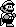 Super Mario Land 2: 6 Golden Coins 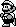
Game Genie
002-C85 - Disable auto-scroll
004-115 + 004-215 + 004-315 + 004-415 - No music
992-625 + 092-635 - 999 coins
992-8D5 - 99 enemy count (Every enemy killed grants a star)
FF2-715 - Invincible
 Super Mario Special 3 (bootleg) 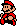
Super Mario Special 3 (bootleg) 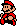
Game Genie
002-763 - Invincible
Game Boy Advance
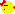 Namco Museum 
Codebreaker Advance
 Ms. Pac-Man
Ms. Pac-Man
33000014 00FF - Rack cheat (advance to next level instantly)
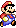 Super Mario Advance 
Codebreaker Advance
330007E8 0000 + 33000838 0000 + 33000888 0000 + 330008D8 0000 + 33000928 0000 + 33000978 0000 - No music after title
33001A26 0004 - Every cherry spawns a Star
Game Gear
 Ms. Pac-Man
Ms. Pac-Man 
Pro Action Replay
00C14100 - Rack cheat (advance to next level instantly)
 Pac-Man
Pac-Man 
Pro Action Replay
00C15300 - Rack cheat (advance to next level instantly)
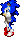 Sonic Blast 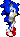
Pro Action Replay
00D50000 - No characters, no gameplay :)
00D522FF - Invincible after first hit
00D53D01 - Moon jump (disables double jump/glide)
00D53E00 - Infinite double jump (Sonic)
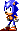 Sonic Chaos 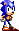
Pro Action Replay
00D3B200 - Moon jump/Infinite jump
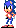 Sonic the Hedgehog 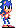
Pro Action Replay
00DC0800 + 00DC0A00 - No music
 Sonic the Hedgehog 2
Sonic the Hedgehog 2 
Pro Action Replay
00D34F00 - Invisible Sonic
00D3AA00 - Moon jump/Infinite jump
00D50D11 - Ultimate corruption (SEIZURE WARNING)
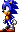 Sonic the Hedgehog Triple Trouble 
Pro Action Replay
00D3C300 - Moon jump/Infinite jump
Nintendo Entertainment System/Famicom
Ms. Pac-Man (Namco)
Custom
003D:01 - Eat one dot to advance to the next level
Ms. Pac-Man (Tengen)
Custom
0383:00 - Rack cheat (advance to next level instantly)
 Pac-Land
Pac-Land 
Custom
0513:00 + 0528:00 + 0529:00 + 052A:00 + 052B:00 + 052D:00 + 052E:00 + 052F:00 + 0530:00 + 0531:00 + 0532:00 - No music
Pac-Man
Custom
006A:01 - Eat one dot to advance to the next level
 Sesame Street: Big Bird's Hide & Speak 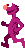
Sesame Street: Big Bird's Hide & Speak 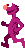
Custom
0006:FF + 0007:FD - Big Bird and some sounds will be heavily distorted
000C:FF - Big Bird will not speak and some sounds will not play
 Sesame Street: Countdown
Sesame Street: Countdown 
Custom
017A:00 - Always pick a glitch number. "Ah, ah, ah!"
017A:01 - Always pick the number one.
017A:02 - Always pick the number two.
017A:03 - Always pick the number three.
017A:04 - Always pick the number four.
017A:05 - Always pick the number five.
017A:06 - Always pick the number six.
017A:07 - Always pick the number seven.
017A:08 - Always pick the number eight.
017A:09 - Always pick the number nine.
017A:0A - Always pick the number ten.
017A:0B - Always pick a glitch number. "That's"
017A:0C - Always pick a glitch number. "No"
017A:0D - Always pick a glitch number. "Find"
017A:0E - Always pick a glitch number. "Got it"
017A:0F - Always pick a glitch number. "Not enough"
017A:10 - Always pick a glitch number. "Let's go"
017A:11 - Always pick a glitch number. "Try again"
017A:12 - Always pick a glitch number. "(silence)"
017A:13 - Always pick a glitch number. "Wonderful"
0374:00 + 0375:00 + 0376:00 + 0377:00 - No music
04CE:00 - In run mode, hold jump to bounce
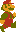 Super Mario Bros./Super Mario Bros. 2 (FDS) 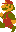
Custom
001E:01 + 001F:01 + 0020:01 + 0021:01 + 0022:01 - All enemies are invincible
001E:03 + 001F:03 + 0020:03 + 0021:03 + 0022:03 - Some enemies are dead/untouchable
0039:00 - All power-up question blocks contain a Super Mushroom
0039:01 - All power-up question blocks contain a Fire Flower
0039:02 - All power-up question blocks contain a Star
0039:03 - All power-up question blocks contain a 1-Up Mushroom
0039:41 - All power-up question blocks contain a Fire Flower that acts like a Star
0039:42 - All power-up question blocks contain a Star (doesn't move)
00FB:00 + 00FC:00 - No music
06CC:01 + 076A:01 + 07FC:01 - Hard Mode
0733:01 - Have mushroom/cloud platforms + orange & red palette on every level
0733:02 - Turns all grassy/mushroom/cloud platforms into Bill Blasters
0743:00 - Every sky bonus level is treated as a regular level
0743:01 - Every level is treated as a sky bonus level
0754:01 + 0756:02 - Small Fire Mario
075B:00 - Removes invisible checkpoints
075E:65 - Every coin gives a 1-up
 Super Mario Bros. 2 (FDS) Exclusives
Super Mario Bros. 2 (FDS) Exclusives
0039:04 - All power-up question blocks contain a Poison Mushroom
 Super Mario Bros. 2
Super Mario Bros. 2 
Custom
0600:00 - No music
0620:00 - 1-up won't respawn as vegetable if picked up again
062A:05 - Every cherry spawns a Star
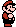 Super Mario Bros. 3 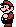
Custom
0014:01 - Beat level instantly (won't work for final castle)
04F5:00 + 04F4:00 - No music
054F:01 - Have the spinning jump animation always (glitchy with Small/Frog Mario, can't use pipes)
0715:FF + 0716:FF + 0717:FF - Have infinite score (unlocks N-Spade after every level)
7D80:01 + 7D81:02 + 7D82:03 + 7D83:04 + 7D84:05 + 7D85:06 + 7D86:07 + 7D87:08 + 7D88:09 + 7D89:0A + 7D8A:0B + 7D8B:0C + 7D8C:0D - Infinite of every item on map
7DA2:63 - 99 coins (every coin gives a 1-up)
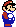 Super Mario World (bootleg) 
Custom
008E:00 - No music
0376:64 - Every coin gives a 1-up
Sega Genesis/Sega Mega Drive
 Ms. Pac-Man
Ms. Pac-Man
Game Genie
AAJR-AAEB - Rack cheat (advance to next level instantly)
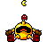 Pac-Man 2: The New Adventures
Pro Action Replay
Pac-Man/Pac-Jr. 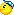
96GR-AAHT - Rack cheat (advance to next level instantly)
 Sonic the Hedgehog 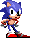
Sonic the Hedgehog 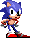
Pro Action Replay
AD2S-8EAC - Slow music
Sega Master System
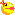 Ms. Pac-Man 
Pro Action Replay
00D76A00 - Rack cheat (advance to next level instantly)
Sonic Blast
Pro Action Replay
00D50000 - No characters, no gameplay :)
00D522FF - Invincible after first hit
00D53D01 - Moon jump (disables double jump/glide)
00D53E00 - Infinite double jump (Sonic)
Sonic Chaos
Pro Action Replay
00D3B200 - Moon jump/Infinite jump
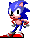 Sonic's Edusoft (prototype) 
Pro Action Replay
00C84800 - No music
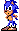 Sonic the Hedgehog 
Pro Action Replay
00D28E01 - Moon jump/Infinite jump
00DC0800 + 00DC0A00 - No music
Sonic the Hedgehog 2
Pro Action Replay
00D34F00 - Invisible Sonic
00D3AA00 - Moon jump/Infinite jump
00D50D11 - Ultimate corruption (SEIZURE WARNING)
Super Bioman I (bootleg) 
Pro Action Replay
00C070FF - Infinite lives
00C078FF - Infinite time
00C0D5FF - Invincible
00CA2100 + 00CA4100 + 00CA6100 - No music (mostly)
 Super Boy I/II (bootleg)
Super Boy I/II (bootleg) 
Pro Action Replay
00C04AFF + 00C049FF - Infinite time
00C23399 - 99 coins (every coin gives a 1-up)
00C23E00 - Infinite jump
00C37201 - Always be big
00C37301 - Always have fire power
00C38300 - Play the game during demos
00C38440 - Play music at double the speed
00C384F0 - Play music at half the speed
00DA2100 + 00DA4100 + 00DA6100 - No music
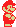 Super Boy 3 (bootleg) 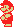
Pro Action Replay
00C04200 + 00C06200 + 00C08200 - No music
00C17800 - Invincible
00C18D30 - Infinite time
00C19001 - Always be big
00C19101 - Always have fire power
 Super Boy 4 (bootleg) 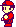
Super Boy 4 (bootleg) 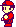
Pro Action Replay
00DB7701 - Always be big
00DB7802 - Always have fire power
00DB7901 - Invincible
Super Nintendo Entertainment System/Super Famicom
Ms. Pac-Man
Pro Action Replay
7E026A00 - Rack cheat (advance to next level instantly)
Pac-Man 2: The New Adventures
Pro Action Replay
Pac-Man/Ms. Pac-Man 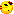
7E091000 - Rack cheat (advance to next level instantly)
 Super Mario All-Stars 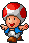
Super Mario All-Stars 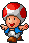
Pro Action Replay
7E006200 - No music during title and game select
7E010311 - Slightly pixelated
7E0103FF - Extremely pixelated
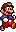 Super Mario Bros./The Lost Levels 
7E002900 + 7E002A00 + 7E002B00 + 7E002C00 + 7E002D00 + 7E002E00 + 7E002F00 + 7E003000 - All enemies are invincible
7E002902 + 7E002A02 + 7E002B02 + 7E002C02 + 7E002D02 + 7E002E02 + 7E002F02 + 7E003002 - Some enemies are dead/untouchable
7E020C00 - All power-up question blocks contain a Super Mushroom
7E020C01 - All power-up question blocks contain a Fire Flower
7E020C02 - All power-up question blocks contain a Star
7E020C03 - All power-up question blocks contain a 1-Up Mushroom
7E020C41 - All power-up question blocks contain a Fire Flower that acts like a Star
7E020C42 - All power-up question blocks contain a Star (doesn't move)
7E06CC01 + 7E076A01 + 7E07FC01 - Hard Mode
7E071404 - Duck jump for every jump
7E073302 - Turns all grassy/mushroom/cloud platforms into Bill Blasters
7E074300 - Every sky bonus level is treated as a regular level
7E074301 - Every level is treated as a sky bonus level
7E075401 + 7E075602 - Small Fire Mario
7E075B00 - Removes invisible checkpoints
7E075E63 - Every coin gives a 1-up
7E0E7E11 - Slightly pixelated
7E0E7EFF - Extremely pixelated
7E160280 - No music
 Super Mario Bros. Exclusives
Super Mario Bros. Exclusives
7E005C00 + 7E009908 + 7E00BA00 + 7E00DB01 - Underwater theme for every level (includes water physics)
7E005C01 + 7E009912 + 7E00BA01 + 7E00DB07 - Snow theme for every level
7E005C01 + 7E009917 + 7E00BA01 + 7E00DB05 - Overworld theme for every level
7E005C02 + 7E009911 + 7E00BA02 + 7E00DB1A - Underground theme for every level
7E005C03 + 7E009904 + 7E00BA03 + 7E00DB1C - Underground theme for every level
7E073301 + 7E00DB12 - Have mushroom platforms + mushroom platform background on every level
 The Lost Levels Exclusives
The Lost Levels Exclusives
7E020C04 - All power-up question blocks contain a Poison Mushroom
7E073301 + 7E00DB24 - Have cloud platforms + cloud background on every level
 Super Mario Bros. 2 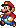
Super Mario Bros. 2 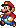
7E062000 - 1-up won't respawn as vegetable if picked up again
7E062A04 - Every cherry spawns a Star
7E1DE200 - No music
 Super Mario Bros. 3
Super Mario Bros. 3 
7E001401 - Beat level instantly (won't work for final castle)
7E005A01 - Enable spinning animation on map at all times (glitchy with all power-ups)
7E020D11 - Slightly pixelated
7E020DFF - Extremely pixelated
7E054F01 - Enable spinning jump animation at all times (glitchy with Small/Frog Mario, can't use pipes)
7E0715FF + 7E0716FF + 7E0717FF - Have infinite score (unlocks N-Spade after every level)
7E076901 + 7E076A01 + 7E076B01 + 7E076C01 + 7E076D01 + 7E076E01 + 7E076F01 + 7E077001 - Some enemies/items will flash palettes
7E120200 - No music
7E1D8001 + 7E1D8102 + 7E1D8203 + 7E1D8304 + 7E1D8405 + 7E1D8506 + 7E1D8607 + 7E1D8708 + 7E1D8809 + 7E1D890A + 7E1D8A0B + 7E1D8B0C + 7E1D8C0D - Infinite of every item on map
7E1DA263 - 99 coins (every coin gives a 1-up)
7E1F5502 - Music Box on every map
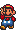 Super Mario Bros. 3 (Battle Mode) 
7E193E00 - You can hit the POW block an infinite amount of times
7E19AB01 - Mario will stay big
7E19AC01 - Luigi will stay big
7E19B3FF - Mario will be invincible
7E19B4FF - Luigi will be invincible
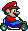 Super Mario Kart 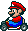
Pro Action Replay
7E0E0C00 - No music
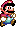 Super Mario World 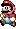
Pro Action Replay
7E007100 - Move around during level intro cutscenes, such as for castles
7E0DBF63 - 99 coins (Every coin gives a 1-up)
7E13F4FF + 7E13F5FF + 7E13F6FF + 7E13F7FF + 7E13F8FF - Every block in the coin bonus game is a 1-up
7E16E10D + 7E16E20D + 7E16E30D + 7E16E40D + 7E16E50D + 7E16E60D - Every point is a 1-up
7E16E10E + 7E16E20E + 7E16E30E + 7E16E40E + 7E16E50E + 7E16E60E - Every point is a 2-up
7E16E10F + 7E16E20F + 7E16E30F + 7E16E40F + 7E16E50F + 7E16E60F - Every point is a 3-up
7E16E110 + 7E16E210 + 7E16E310 + 7E16E410 + 7E16E510 + 7E16E610 - Every point is a 5-up
7E1DFB00 - No music
 Super Mario World 2: Yoshi's Island
Super Mario World 2: Yoshi's Island 
Pro Action Replay
7E004D00 + 7E004E00 - No music
7E037B63 - 99 coins (Every coin gives a 1-up)